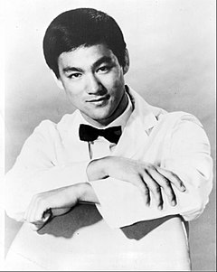

ბრიუს ლი (ინგლ. Bruce Lee; ნამდვილი სახელი — ლი ჯუნ ფენი, ჩინ.: 李振藩; დ. 27 ნოემბერი, 1940, სან-ფრანცისკო — გ. 20 ივლისი, 1973, ჰონგ-კონგი) — ჩინელი კუნგ ფუს ოსტატი, ფილოსოფოსი, მსახიობი, რეჟისორი, პროდიუსერი, სცენარისტი, საბრძოლო ხელოვნების ერთ-ერთი მიმდინარეობის ჯიტ კუნ დოს დამაარსებელი. XX საუკუნის ყველაზე გავლენიანი და სახელოვანი საბრძოლო ხელოვნების ოსტატი. გადაღებულია 36 ფილმში. ჰონგ-კონგში ხოლო შემდგომ უკვე ჰოლივუდში მისი მონაწილეობით გადაღებულმა ფილმებმა 70-იან წლების ამერიკაში დიდი ინტერესი გამოიწვია და ჩინური საბრძოლო ხელოვნება პოპულარული გახადა. ბრიუს ლის მონაწილეობა აქვს მიღებული ისეთ ცნობილ ფილმებში როგორებიცაა ლო ვეის „დიდი ბოსი“ (1971) და „მრისხანების მუშტი“ (1972), „დრაკონის გზა“ (1972) რეჟისორი და სცენარის ავტორი ბრიუს ლი, უორნერ ბრაზერსის „დრაკონის გამოსვლა“ (1973), „სასიკვდილო თამაში“ (1978) რეჟისორი რობერტ კლოუზი.
